Über das Lagerbuchungs-EXIM lassen sich Lagerbewegungen (inklusive Lagerorterfassungen) oder reine Lagerortbuchungen ex- und importieren, wobei der Aufruf über den Menüpunkt…
1 WinLine FAKT
1 Erfassen
1 Lagerverwaltung
1 Lagerbuchungs-EXIM
… erfolgt.
Hinweis
Neben der klassischen EXIM-Treiber-Angabe steht auch die Möglichkeit zur Verfügung die Lagerbuchhaltung mit Buchungsdaten aus einer SQL-Tabelle der Mandantendatenbank durchzuführen (siehe Kapitel Externe Lagerbuchung bzw. Feld "externe Lagerbuchhaltung").
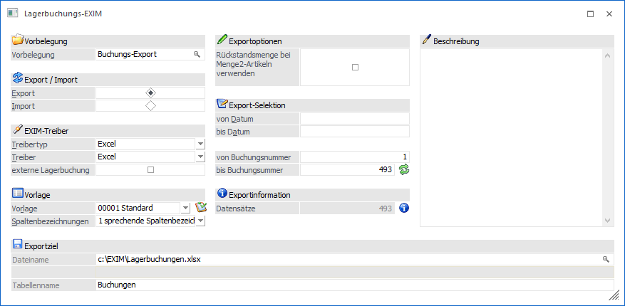
Vorbelegung
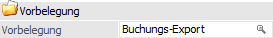
Ø Vorbelegung
Über die Vorbelegung können die Einstellungen eines Ex- bzw. Importvorgangs gespeichert werden. Wurde bereits eine Vorbelegung definiert, kann diese durch Drücken der F9-Taste gesucht werden. Wurde noch keine Vorbelegung definiert, kann diese durch eine Eingabe im Feld "Vorbelegung" angelegt werden. Wurden alle Eingaben durchgeführt, wird die Vorbelegung durch Drücken der F5-Taste bzw. des Buttons "Ok" gespeichert.
Hinweis
Wird mit einer bestehenden Vorbelegung gearbeitet und der Ex- bzw. Import mit Hilfe der Taste F5 bzw. des Buttons "Ok" gestartet, erfolgt eine Sicherheitsabfrage, ob mögliche Änderungen der Einstellungen in der Vorbelegung gespeichert werden sollen.

Export / Import
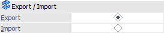
Ø Export/Import
Hier wird entschieden, ob Daten importiert oder exportiert werden sollen.
EXIM-Treiber
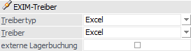
Ø Treibertyp
In diesem Bereich kann gewählt werden, ob der Export über den Treibertyp "Excel", "XML" oder "ODBC" erfolgen soll. Die weiteren Einstellungen dazu erfolgen im Feld "Treiber".
Hinweis1
Bei dem Treibertyp "Excel" handelt es sich um einen von WinLine zur Verfügung gestellten Excel-Treiber, welcher XLSX-Dateien erzeugt und verarbeiten kann.
Hinweis 2
Je nachdem, welcher Treibertyp bzw. Treiber gewählt wurde, stehen unterschiedliche Eingabefelder im Bereich "Exportziel / Datenquelle" zur Verfügung.
ü Excel
Bei der Auswahl "Excel" stehen
Eingabefelder für den Dateinamen (inklusive Dateiverzeichnis) und des
Tabellennamens im Excel-Sheet zur Verfügung.
ü XML
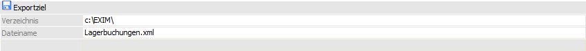
ü ODBC-Treiber
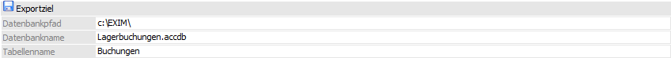
Ø Treiber
An dieser Stelle kann definiert werden, mit welchem Datenformat während des EXIMs gearbeitet werden soll. Eine Auswahl steht hierbei aber nur dann zur Verfügung, wenn mit der Auswahl "ODBC-Treiber" gearbeitet wird.
ü Treibertyp "Excel"
Es steht
lediglich der Eintrag "Excel" zur Verfügung.
ü Treibertyp "XML"
Es steht
lediglich der Eintrag "XML (Webservice)" zur Verfügung. Dieser Treiber kann nur
in Verbindung mit einer Vorlage verwendet werden, die zuvor als
"Webservice-Vorlage" gekennzeichnet wurde.
ü Treibertyp "ODBC-Treiber"
In
dem Feld "Treiber" erfolgt die Auswahl des ODBC-Treibers, welcher verwendet
werden soll. Die angebotenen Treiber sind hierbei abhängig von der Installation
des PCs, wobei alle vorhandenen 32-Bit ODBC-Treiber zur Verfügung stehen
(mesonic ist für die Funktionsfähigkeit bzw. das Vorhandensein der Treiber nicht
verantwortlich).
Hinweis
Je nachdem, welche Treiber
verwendet werden bzw. welche ODBC-Treiber-Version verwendet wird, kann es zu
ungewünschten Verhalten des Exports bzw. Imports kommen, wenn Sonderzeichen im
Verzeichnisnamen oder im Datenbankname vorkommen. Aus diesem Grund wird, wenn
solche Sonderzeichen verwendet werden, eine entsprechende Hinweismeldung
ausgegeben:
Achtung - Treiberauswahl
Um sicherzustellen, dass Notizfelder in voller Länge exportiert werden, sollte je nach verwendetem Treiber (Access- oder SQL-Treiber) der erste auswählbare Treiber aus der Auswahlliste verwendet werden. D.h. ist die Auswahlmöglichkeit an Treibern der Reihenfolge nach z.B. "02 - Microsoft Access Driver (*.mdb)", "10 - Microsoft Access Treiber (*.mdb)" und "16 - Driver do Microsoft Access (*.mdb)", dann sollte in diesem Fall "02 - Microsoft Access Driver (*.mdb)" selektiert werden. Andernfalls wird das Notizfeld in der Regel nur mit 255 Zeichen exportiert.
Achtung - Textdateien
Wenn ein Export von Textdateien
ausgeführt wird, so wird eine SCHEMA.INI-Datei angelegt, welche die
Dateibeschreibung der Exportdatei beinhaltet.
Wenn sich die Vorlage ändert,
so hat dieses keine Auswirkung auf die bereits erzeugte SCHEMA.INI-Datei und es
würde die Fehlermeldung "Die Tabellen existieren bereits und haben einen anderen
Aufbau als die gewählte Vorlage!" ausgegeben werden. Damit der Export wieder
"normal" durchgeführt werden kann, muss dieses Dokument entsprechend angepasst
oder gelöscht (und damit beim nächsten Export neu angelegt) werden. Ebenso
bedarf es, dass die vorhandenen Exportdateien gelöscht werden.
Ø externe Lagerbuchung
Wird diese Option aktiviert, so können direkt die SQL-Tabellen, welche im Menüpunkt Externe Lagerbuchung erzeugt wurden, verwendet werden. Die ebenfalls benötigte Vorlage kann in der externen Lagerbuchhaltung mit Hilfe Buttons "Vorlage erzeugen" generiert werden.
Bei der Erstellung von neuen Tabellen (bei Angabe einer nicht existierenden Datenbank während des Exports) werden die SQL-Spalten mit jenen Nummern der externen Lagerbuchhaltung angelegt (der allgemeine Aufbau der SQL-Tabelle kann dem Kapitel Externe Lagerbuchung - Typ "Lagerbuchung" entnommen werden).
Hinweis
Voraussetzung zur Nutzung der Option ist die Verwendung des Treibertyps "ODBC-Treiber" mit dem Treiber "SQL Server" und die Auswahl "nummerische Spaltenbezeichnungen". Entspricht eine der Einstellungen nicht der Vorgabe, so erscheint bei Anwahl des Buttons "Ok" bzw. des Buttons "Import" die folgende Meldung:
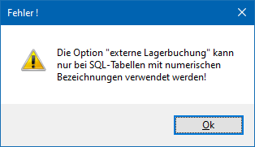
Vorlage
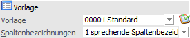
Ø Vorlage
An dieser Stelle wird die Vorlage hinterlegt, welche für den Export bzw. Import verwendet werden soll. Mit Hilfe eines Icons wird auf die Art der Vorlage hingewiesen:
ü - Lagerbuchhaltung
Es werden Buchungen
für den Bereich der "Lagerbuchhaltung" durchgeführt (SQL-Tabelle T083).
ü - Lagerort-Buchung
Es werden Buchungen
für den Bereich der "Lagerort-Buchung" durchgeführt (SQL-Tabelle T343).
Hinweis
Mit Hilfe der Vorlage wird definiert, welche Felder exportiert bzw. importiert werden sollen. Zusätzlich können Vorbelegungen hinterlegt werden.
Ø Spaltenbezeichnungen
Hier kann definiert werden, wie bei einem Export die Spaltenbezeichnungen in der Datei gebildet werden sollen, bzw. wie bei einem Import die Bezeichnungen innerhalb der Importdatei vorliegen. Folgende Einstellungen stehen zur Verfügung:
ü 0 - nummerische
Spaltenbezeichnungen
Bei einem Export erhalten die Spalten die Nummer des
ursprünglichen Datenbankfelds bzw. liegen bei einem Import so vor.
Beispiel
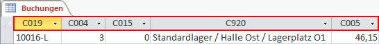
ü 1 - sprechende
Spaltenbezeichnungen
Bei einem Export erhalten die Spalten den Namen des
ursprünglichen Datenbankfelds bzw. liegen bei einem Import so vor.
Beispiel
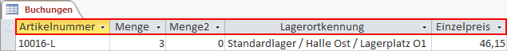
ü 2 - keine
Spaltenbezeichnungen
Wenn mit dem Treibertyp "Excel" gearbeitet wird, so kann
gänzlich auf Spaltenbezeichnungen verzichtet werden.
Beispiel
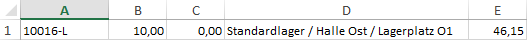
Exportoptionen (nur bei Export)
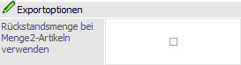
Ø Rückstandsmenge bei Menge2-Artikeln verwenden
Handelt es sich bei dem Artikel der Buchungszeile um einen Menge2-Artikel, so kann mit Hilfe dieser Option das Feld "Menge" mit der Rückstandsmenge und das Feld "Menge2" mit der Nicht-Rückstandsmenge belegt werden, d.h. die Felder werden so gefüllt, wie sie ursprünglich auch erfasst wurden. Das Feld "Menge2" muss hierfür einen Wert ungleich 0 aufweisen.
Hinweis
Die Option steht nur zur Verfügung, wenn eine Vorlage des Bereichs "Lagerbuchhaltung" verwendet wird.
Export-Selektion (nur bei Export)
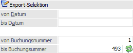
Ø von Datum / bis Datum
An dieser Stelle können die zu exportierenden Datensätze anhand des Datums selektiert werden.
Ø von Buchungsnummer / bis Buchungsnummer
An dieser Stelle können die zu exportierenden Datensätze anhand der Buchungsnummer selektiert werden.
Ø Aktualisieren
Durch Anwahl dieses Buttons wird das Feld "bis Buchungsnummer" mit der aktuell höchsten Buchungsnummer neu belegt.
Exportinformation (nur bei Export)
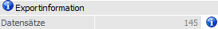
Ø Datensätze
An dieser Stelle wird die Anzahl zu exportierenden Zeilen dargestellt.
Ø  Info
Info
Durch Anwahl des Buttons "Info" wird der aktuelle Datenstand kontrolliert und die Anzahl der zu exportierenden Buchungen dargestellt.
Importoptionen (nur bei Import)
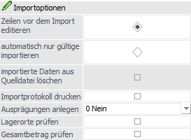
Ø Zeilen vor dem Import editieren
Wenn die Option "Zeilen vor dem Import editieren" aktiviert wurde, so wird vor dem eigentlichen Import automatisch in einen Prüfbereich (die sogenannte Importvorschau) gewechselt.
Ø automatisch nur gültige importieren
Mit Hilfe dieser Option wird der Import bei Anwahl des Buttons "Ok" sofort durchgeführt. Hierbei werden nur jene Buchungszeilen berücksichtigt, welche als korrekt erkannt werden.
Ø importierte Zeilen aus der Quelldatei löschen
Durch Aktivierung dieser Option werden Buchungszeilen, welche aus externen Quellen in die WinLine importiert werden, nach erfolgreichem Import aus der Datenquelle entfernt.
Hinweis
Diese Option kann nur bei Treibern des Typs "ODBC-Treiber" verwendet werden. Des Weiteren wird das Löschen nur ausgelöst, wenn alle Zeilen der Importdatei erfolgreich importiert wurden.
Eine Ausnahme bildet der Import mit aktivierter Option "externe Lagerbuchung". In diesem Fall erhält jeder Datensatz eine eindeutige Kennung und kann nach erfolgreichem Import von der WinLine "einzeln" gelöscht werden.
Ø Importprotokoll drucken
Durch Aktivierung dieser Option wird nach dem Import ein Protokoll ausgegeben. Auf diesem wird aufgeführt, welche Erfassungszeilen importiert werden konnten und welche nicht importiert wurden (inklusive Fehlerbeschreibung).
Ø Ausprägungen anlegen
Mit dieser Option können Ausprägungsartikel optional angelegt werden, wenn die Artikelnummer nicht vorhanden ist und in den Ausprägungsvariablen der Vorlage alle notwendigen Informationen vorhanden sind. Dabei wird folgendes geprüft:
ü In der Spalte "Hauptartikelnummer" muss ein Hauptartikel mit Ausprägungen angegeben werden.
ü Der Eintrag in der Spalte "Ausprägung1" muss angelegt und in der Ausprägungsgruppe des Hauptartikels vorhanden sein.
ü Der Eintrag in der Spalte "Ausprägung2" muss angelegt und in der Ausprägungsgruppe des Hauptartikels vorhanden sein.
ü Der Hauptartikel selber darf gerade nicht bearbeitet werden, d.h. er muss für die Aktualisierung gelockt werden können.
Folgende Optionen stehen zur Auswahl zur Verfügung:
ü 0 - Nein
Wird die
Option "0 - Nein" verwendet und der zu importierende Artikel trotz der oben
genannten Infos nicht gefunden, erfolgt eine Fehlermeldung.
ü 1 - Ja, wenn noch
nicht vorhanden
Ist diese Option aktiviert und der Artikel kann nicht
gefunden werden, wird der Ausprägungsartikel automatisch angelegt. Dabei wird
bei Chargenartikel der zuletzt verwendete (interne!) Chargenzähler in den
Hauptartikel zurückgeschrieben bzw. der Ausprägungsbereich beim Hauptartikel
automatisch erweitert.
ü 2 - Chargen immer
anlegen (auch wenn bereits vorhanden)
Diese Option wird nur bei Chargen-,
LIFO- und FIFO-Artikel unterstützt. Dabei wird bei jeder Chargen-Nummer ein
eigener Artikel angelegt, unabhängig davon, ob die Charge bereits vorhanden ist
oder nicht (die Werte werden nicht kumuliert).
Wurde diese Option gesetzt und
ein "normaler" Ausprägungsartikel oder ein Artikel mit Seriennummern importiert,
so wird automatisch die Option "1 - Ja, wenn noch nicht vorhanden"
verwendet.
Hinweis
Für die Nutzung der Neuanlage-Option der Ausprägungen sind folgende Schritte notwendig, wenn zuvor die externe Lagerbuchhaltung verwendet wurde:
ü Im Menüpunkt Externe Lagerbuchung die EXIM-Vorlage anlegen.
ü Die Vorlage anpassen und die Ausprägungsinformationen hinzufügen.
ü Im "Lagerbuchungs-EXIM" mit der Option "externe Lagerbuchung" eine Tabelle über den Export erzeugen.
ü Die bestehende Tabelle ersetzen.
Ø Lagerorte prüfen
Für Artikel mit hinterlegter Lagerortstruktur kann an dieser Stelle entschieden werden, ob mögliche Lagerort-Eigenschaften bzw. Lagerort-Zuordnung geprüft werden sollen. D.h. wird ein Lagerort angegeben, welcher z.B. lt. Zuordnung verboten ist, so würde der Import bei aktivierter Option nicht möglich sein.
Ø Gesamtbetrag prüfen
Wird ein Import für den Bereich der "Lagerbuchhaltung" durchgeführt, so kann mit Hilfe dieser Option der Inhalt des ggfs. vorhandenen Felds "Gesamtpreis" geprüft werden.
ü Option ist aktiviert
Wurde die
Option aktiviert und das Feld befindet sich in der Vorlage, so wird der Inhalt
pro Buchungszeile durch eine Multiplikation von "Menge * Einzelpreis" geprüft.
Gibt es Abweichungen, so werden jene Zeilen als Fehler ausgewiesen und nicht
importiert.
ü Option ist deaktiviert
Wurde
die Option deaktiviert und das Feld befindet sich in der Vorlage, so wird der
Inhalt ohne Prüfung direkt importiert.
Beschreibung

Ø Beschreibung
Wird mit einer Vorbelegung gearbeitet, so kann an dieser Stelle eine zugehörige Beschreibung hinterlegt werden.
Exportziel / Datenquelle
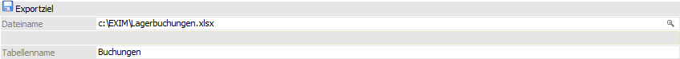
Ø Beschreibung von Datei bzw. Datenbank
In Abhängigkeit des gewählten Treibertyps und Treibers werden in diesem Bereich Felder angezeigt, in denen Ziel (Bereich in den die Daten aus der WinLine kommend abgespeichert werden) bzw. Quelle (Bereich aus dem die Daten in die WinLine importiert werden) zu beschreiben sind.
Achtung
Der ODBC-Treiber kann zwar innerhalb von Access-Dateien und SQL-Datenbanken Tabellen erzeugen und diese Tabellen mit Datensätzen füllen, er kann aber nicht die Access-Datei bzw. die Datenbank selbst erstellen. Diese muss bereits vorhanden sein.
Buttons

Ø Ok
Durch Anwahl des Buttons "Ok" bzw. der Taste F5 wird der Export bzw. Import durchgeführt.
Hinweis zum Import
Wurde die Option "Zeilen vor dem Import editieren" aktiviert, so wird zunächst automatisch in einen Prüfbereich gewechselt, in welchem die Buchungszeilen in Form einer Tabelle dargestellt werden.
Ø Import (nur bei Import)
Mit Hilfe des Buttons "Import" im Prüfbereich (siehe Option "Zeilen vor dem Import editieren" bzw. Button "Ok") wird der Import durchgeführt.
Ø Ende
Durch Drücken des Buttons "Ende" bzw. der Taste ESC wird das Fenster geschlossen und alle Einstellungen verworfen.
Ø Eingaben initialisieren
Durch Anklicken dieses Buttons werden alle getätigten Einstellungen verworfen wodurch eine neue Selektion durchgeführt werden kann.
Ø Exportvorschau (nur bei Export)
Durch Drücken des Buttons "Exportvorschau" werden in einem neuen Fenster die Datensätze, die auf Grund der vorgenommenen Einstellungen exportiert werden würden, angezeigt.
Ø Zurück
Durch Anwahl des Buttons "Zurück" kann aus der Export- bzw. Importvorschau in das Hauptfenster zurückgewechselt werden.